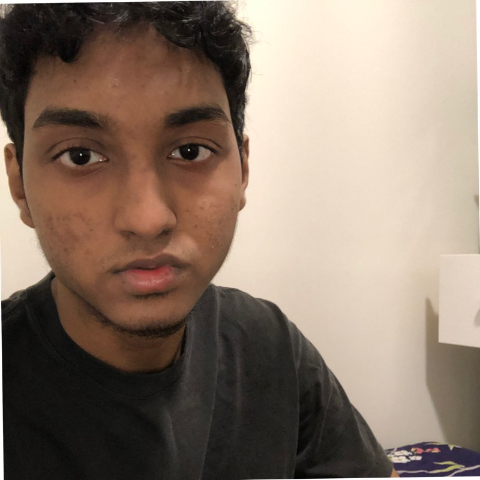

Ishmam's Online Resume

Summary
I was born in Bangladesh and currently a student at City College of New York. I am expecting to graduate 2025 with a Bachelors of Engineering in Computer Science and a minor in Business Administration. I want to continue to develop my skills as a software engineer and inevitably make impact on millions of people with my code. I enjoy putting myself in uncomfortable situations as that's when I see the most growth. On my free time, I like conversing with people, watch anime, play soccer, running, and go for walks. I love working with technology, both software and hardware, as it's fascinating to see different things function together to give a certain result. One of my favorite and most impactful book of all time is "Can't Hurt Me" by David Goggins.
Education
City College of New York
- Bachelors of Science in Computer Science 2021-2025
- Cumulative GPA: 3.497
- Relevant Coursework: Data Structures and Algorithms, Discrete Math, Intro to Computing (C++), Probability and Statistics, Engineering Economics, Calculus 3, Linear Algebra, Intro to Blockchain
Work Experience
Research Intern - March 2023 to August 2023
Louis Stokes Alliances for Minority Participation | New York, NY
- Utilized machine learning to prognose Alzheimer's disease in patient data sets accurately (Numpy, Pandas)
- Trained and fine-tuned a Tensorflow model until accuracy of predicting the slope of cognition decline improved from an average percent error of 121.54% to 18.8% as measured by a “Leave One Out Cross Validation” script
- Wrote and presented an extensive research paper that included visualized results to more than 5 engineers
(Matplotlib, TexStudio)
Student Intern - May 2023
RFCuny | New York, NY
- Programmed drones to fly towards a jammer autonomously by implementing a Python script that connects to a Lora device and distinguishes between a Lora device and a GPS device across 10 drones in a team of 5 (subprocess, pySerial)
Skills
- Programming Languages: Python, Javascript, HTML/CSS, C++
- Technologies: Tensorflow, Numpy, Matplotlib, Pandas, pySerial, SocketIO, Git, Github
Hobbies
Soccer

Contact
LinkedIn
Email: ishmamf2003@gmail.com